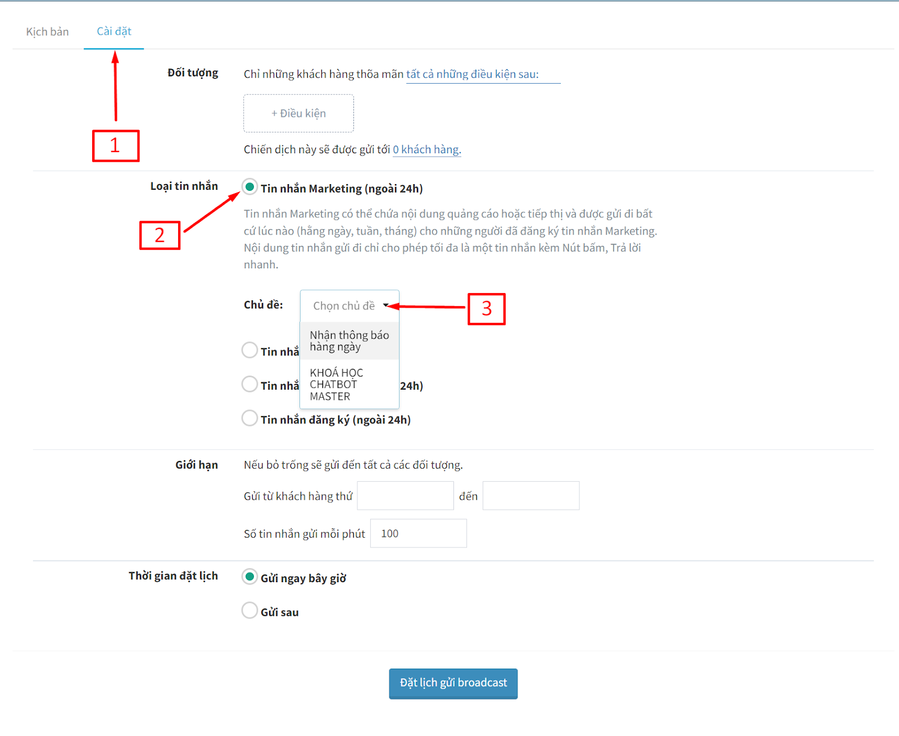

Gửi tin sau 24h với Tin nhắn Marketing
Từ tháng 5/2023, Facebook cập nhật tính năng Tin nhắn Marketing cho phép Fanpage gửi tin nhắn hàng loạt đối với khách hàng cũ của mình mà không bị khóa fanpage. Với tính năng này, Fanpage có thể yêu cầu người dùng cho phép gửi tin nhắn tiếp theo sau khi khách hàng tương tác với Fanpage ngoài 24h, có thể gửi hàng ngày, hàng tuần, hàng tháng.
Tin nhắn Marketing là một tính năng của Nền tảng Messenger cho phép Trang Facebook gửi nhiều tin nhắn, bao gồm cả tin nhắn quảng cáo trong Messenger, giúp bạn thuận tiện để giữ liên lạc thường xuyên với khách hàng, thu hút các mối quan hệ nhằm tăng doanh số bán hàng. Đây là một tính năng chính thống của Facebook nên hoàn toàn không tiềm ẩn bất cứ nguy cơ nào dẫn đến Trang của bạn bị hạn chế bởi Facebook.
Hướng dẫn cấu hình gửi Tin nhắn Marketing
1. Tạo chủ đề Tin nhắn Marketing
Truy cập vào AhaChat và vào menu “Cài đặt”. Tại đây bạn sẽ nhìn thấy mục “Chủ đề”, hãy tiến hành tạo Chủ đề Tin nhắn Marketing với nút “Tạo mới” và nhập tên, nội dung cho chủ đề (xem hình dưới).
Đến đây, bạn sẽ cần sự đồng ý của khách hàng để có thể gửi Tin nhắn Marketing đến họ, hãy cài đặt nội dung này và gửi đến khách hàng bằng bất cứ công cụ nào của AhaChat (gắn vào chăm sóc, sử dụng kịch bản “từ khóa”, v.v….). Sau khi người dùng ấn vào nút đồng ý “Nhận tin nhắn”, họ sẽ nhận được các thông báo của bạn trong tương lai.
2. Cài đặt Tin nhắn Marketing
Để tạo được nội dung thông báo nhận tin nhắn, trong kịch bản trả lời tự động bạn chọn “Tạo mới block” → chọn block “HỘI THOẠI”
Phần tin nhắn của khách bạn chọn Tin nhắn Marketing
Nhấn vào nút bấm để cài đặt nội dung thông báo
- Tiêu đề: Nhập tiêu đề tối đa 65 ký tự, là tiêu đề bạn gửi tới khách hàng với nội dung thật hấp dẫn nhằm thu hút khách bấm vào nút “Nhận tin nhắn”.
- Hình ảnh: Bạn thêm link hình ảnh hoặc chọn up ảnh lên từ máy, dung lượng dưới 2mb, bạn sử dụng hình ảnh để miêu tả cho thông báo muốn gửi tới khách hàng.
- Tần suất: Bạn được phép lựa chọn 1 trong 3 tuần suất gửi tin ( hàng ngày - hàng tuần - hàng tháng) để gửi tin nhắn ngoài 24h cho khách hàng khi khách bấm nút nhận tin nhắn.
- Chủ đề: Chọn chủ đề bạn đã tạo ở mục “Chủ đề” trong menu Cài đặt.
Trong đó Tần suất:
- HẰNG NGÀY - cho phép các doanh nghiệp gửi một tin nhắn mỗi 24h trong khoảng thời gian 6 tháng.
- HẰNG TUẦN - cho phép các doanh nghiệp gửi 1 tin nhắn trong mỗi tuần (7 ngày)trong khoảng thời gian 9 tháng.
- HẰNG THÁNG - cho phép các doanh nghiệp gửi 1 tin nhắn mỗi tháng (30 ngày) trong khoảng thời gian 12 tháng.
Sau khi bạn gửi Tin nhắn Marketing cho khách hàng, khách hàng sẽ nhận được tin nhắn như sau:
Những khách hàng đã bấm "Nhận tin nhắn", bạn có thể lọc danh sách khách hàng theo điều kiện là Tin nhắn Marketing
Chú ý: Mỗi user sẽ được gắn nhận Tin nhắn Marketing 1 lần theo từng chủ đề, nếu user đã được gắn thông báo hàng ngày, khi user bấm nhận thông báo hàng tháng thì tự động user sẽ được gắn hàng tháng và hủy thông báo hàng ngày cho mỗi Chủ đề Tin nhắn Marketing. Tham khảo thêm các cách mời khách hàng bấm nhận tin nhắn marketing.
Từ đó: Có tệp khách hàng đã được phân loại bạn có thể gửi chiến dịch theo tệp này bằng broadcast hoặc chăm sóc.
3. Cài đặt gửi broadcast
Với broadcast bạn có thể gửi tối đa 3 tin nhắn bao gồm hình ảnh kèm nút bấm cho khách hàng mỗi ngày.
Kết quả
Khi gửi chiến dịch cho tệp khách hàng được gắn "Tin nhắn Marketing" bạn cần chọn đúng chủ đề.

4. Cài đặt gửi chăm sóc
- Vào chăm sóc → tạo mới để tạo chăm sóc gửi tin nhắn cho khách hàng
- Tạo nhiều chiến dịch để gửi liên tục cho khách theo khoản thời gian phù hợp với tần suất mà khách đã chọn nhận tin (cách nhau 1 ngày đối với khách đã chọn nhận tin HẰNG NGÀY)
- Mục thời gian chọn thiết lập thời gian gửi (1), Chọn chủ đề Tin nhắn Marketing (2) xong bấm Cập nhật (3)
Các cách để gắn chăm sóc tự động cho khách đã đăng ký nhận tin:
- Sử dụng Trigger để lọc các khách hàng đã nhận thông báo tin nhắn và tự động gắn chăm sóc cho tất cả tệp khách hàng đó
- Gắn chăm sóc trực tiếp vào nút bấm “Đăng ký nhận tin”
Khi khách chọn “Nhận tin nhắn” thì sẽ đồng thời được gắn chăm sóc chứa các chiến dịch gửi tin mỗi ngày.
Lưu ý:
Mỗi lần gửi qua Tin nhắn Marketing có thể gửi tối đa 3 tin nhắn. Gửi rồi thì 1 ngày sau mới được gửi tiếp.
- Bạn phải gửi những tin nhắn này trong vòng 2 phút kể từ tin nhắn trao đổi thêm đầu tiên.
- Tin nhắn trao đổi thêm thứ hai và thứ ba không được vượt quá 250 ký tự.
- Nội dung thông báo không được chứa các nội dung gây nhầm lẫn, dễ khiến khách hàng báo cáo spam. Đảm bảo nội dung như một lời nhắc nhở. Nội dung phải tuân theo các tiêu chuẩn của cộng đồng. Không được hứa với khách hàng rằng sẽ trả tiền để họ đăng ký nhận tin nhắn.
- Không gửi mật khẩu, thông tin đăng nhập của người dùng, thông tin nhận cá nhân (tức là thông tin như tên hoặc địa chỉ email có thể được sử dụng để liên hệ với một người hoặc xác định họ là ai) hoặc thông tin nhạy cảm khác (chẳng hạn như thông tin về sức khỏe, tài chính, thanh toán hoặc chủ thẻ hoặc các danh mục thông tin khác được xác định là nhạy cảm theo luật hiện hành).
- Số lượng yêu cầu Nhận tin nhắn có giới hạn cho từng khách hàng (Facebook không quy định bao nhiêu cho một khách hàng).
Chúc bạn kinh doanh thành công với tính năng này!